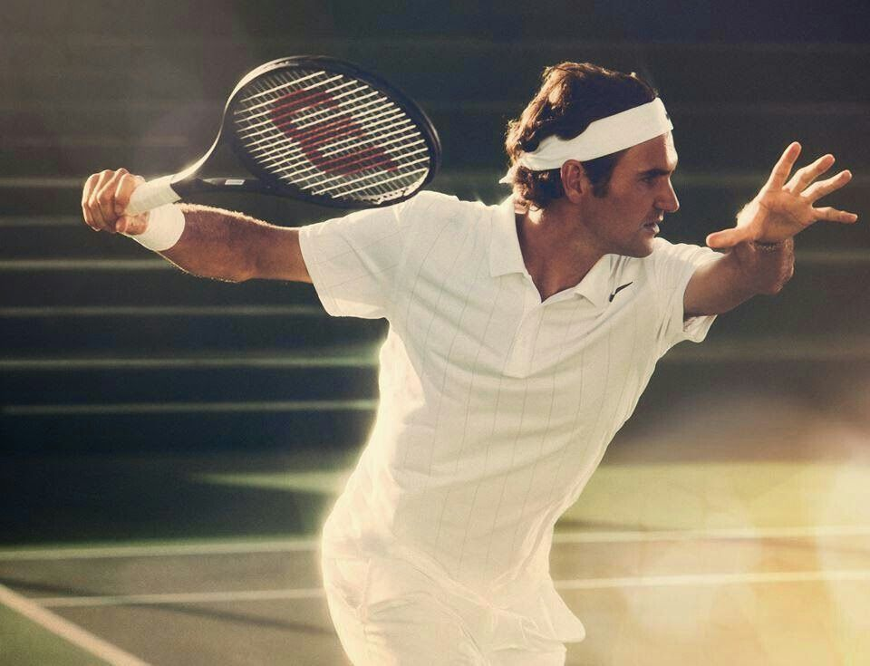

L'après Big Three
Pendant près de vingt ans, trois hommes ont tout gagné et tout écrasé. Leur règne semblait ne jamais devoir finir. Aujourd'hui, le tennis tourne enfin la page — et découvre l'angoisse, autant que l'excitation, de l'après.

La fin d'une ère dorée
Federer, Nadal, Djokovic : pendant deux décennies, ces trois noms ont monopolisé les titres, les records, l'amour du public. Ils n'étaient pas seulement des champions, ils étaient une époque entière du sport. On a grandi en croyant que le tennis, c'était eux.
Leur domination était si totale qu'elle en devenait presque irréelle. Génération après génération, les jeunes talents venaient se briser contre ce mur de trois géants. On se demandait si quelqu'un parviendrait un jour à les détrôner, ou s'ils partiraient simplement d'eux-mêmes, par usure du temps.
Et puis le temps a fait son œuvre. Les retraites, les blessures, l'âge : un à un, les piliers vacillent. Le tennis se retrouve orphelin de ses héros, face à une question vertigineuse : qui, maintenant ? Comment succéder à des légendes ?
La relève est là
La réponse est venue plus vite qu'on ne le craignait. Une nouvelle génération, menée par des prodiges comme Alcaraz et Sinner, a surgi, pleine de talent, d'audace et de fraîcheur. Le tennis n'est pas mort avec ses géants : il renaît.
Ces jeunes joueurs apportent un style neuf, une énergie différente, une façon de jouer plus explosive, plus spectaculaire. Ils ne cherchent pas à imiter leurs aînés : ils inventent leur propre tennis. Et le public, d'abord inquiet, se surprend à retomber amoureux.
Le tabou du mental
Cette nouvelle génération arrive aussi avec une parole différente. Là où leurs aînés cachaient leurs failles, les jeunes champions parlent ouvertement de la pression, de l'anxiété, de l'épuisement. Le tennis, sport terriblement solitaire, découvre enfin la question de la santé mentale.
C'est une révolution silencieuse. Pendant longtemps, montrer sa fragilité passait pour une faiblesse impardonnable dans le sport de haut niveau. Aujourd'hui, en parler est devenu un acte de courage et de lucidité. Les athlètes rappellent qu'ils sont des êtres humains avant d'être des machines à gagner.
Ce changement dépasse de loin le tennis. Il accompagne une évolution plus large de toute la société, qui apprend peu à peu à prendre au sérieux ce qui se joue dans les têtes autant que dans les corps. Le sport, longtemps culte de la force, devient aussi un espace de parole.
Un sport plus global que jamais
La relève vient désormais du monde entier. Le tennis, longtemps dominé par quelques nations, voit émerger des talents de partout, portés par de nouveaux publics et de nouveaux marchés. Le sport s'ouvre, se diversifie, se mondialise.
Cette ouverture est une richesse. Elle amène des styles variés, des histoires nouvelles, des rivalités inédites. Le tennis de demain sera plus divers, plus imprévisible, plus représentatif du monde réel que celui d'hier.
Le plus beau des renouvellements
Au fond, ce que vit le tennis, tous les grands récits le vivent un jour : le passage de témoin, le deuil des héros d'avant, l'émergence de nouveaux visages. C'est douloureux, mais c'est aussi ce qui maintient un sport en vie.
Un sport qui ne renouvelle pas ses héros meurt avec eux. En acceptant de tourner la page, le tennis s'offre une seconde jeunesse. Les géants d'hier resteront des légendes, mais la beauté du sport est là : il recommence toujours, et chaque génération a droit à ses propres rêves.
On croyait que le tennis finirait avec ses géants. Il ne faisait que recommencer.